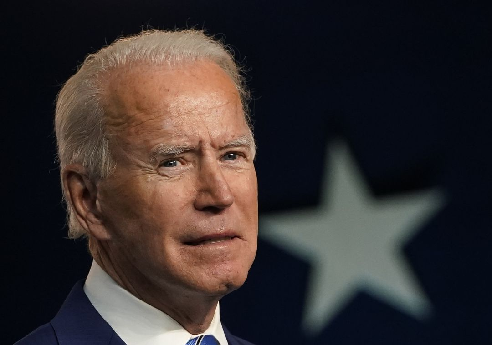

Andrés Manuel López Obrador
Nacido el 13 de noviembre de 1953), también conocido por sus iniciales AMLO , es un político mexicano que se desempeña como el 65 ° presidente de México desde el 1 de diciembre de 2018.
- López Obrador se graduó de la Universidad Nacional Autónoma de México en 1986
- 2014 fundó el Movimiento de Regeneración Nacional (MORENA), que lideró hasta 2017.
Vladímir Putin
Vladímir Putin nació el 7 de octubre de 1952 en Leningrado, hoy San Petersburgo.
- Presidente de la Federación de Rusia: Desde el 7 de mayo de 2012
- Educación: Cursó estudios en la Escuela Nº 193 de su ciudad natal. Licenciado en Derecho en la Universidad de San Petersburgo, donde dio clases con el que sería alcalde de la ciudad, Anatoli Sobchak.

Joseph Robinette Biden Jr.
Es un político americano que es el número 46 y actual presidente de los Estados Unidos . Miembro del Partido Demócrata , se desempeñó como el 47 ° vicepresidente de 2009 a 2017 bajo Barack Obama y representó a Delaware en el Senado de los Estados Unidos de 1973 a 2009.
- Nacido:nacido el 20 de noviembre de 1942.
- Educación: Biden estudió en la Universidad de Delaware antes de obtener su título de abogado en la Universidad de Syracuse en 1968

Kim Jong-un
3.er Gobernante de Corea del Norte: Desde el 30 de diciembre de 2011
- Nacio: nació en Pionyang el 8 de enero de 1984.
- Educación: Se cree que Kim Jong-un regresó hacia el año 2000 a Corea del Norte, donde se graduó, en 2007, en la Universidad Militar Kim Il Sung.